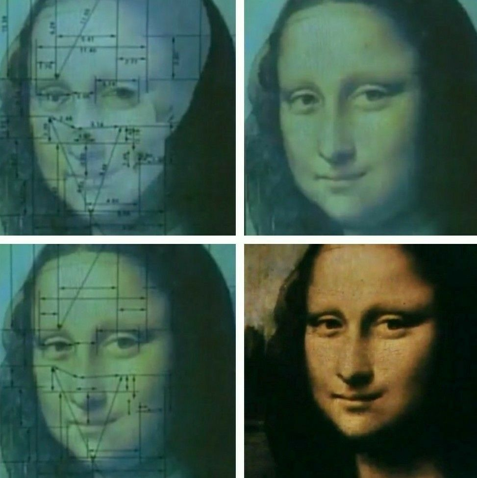
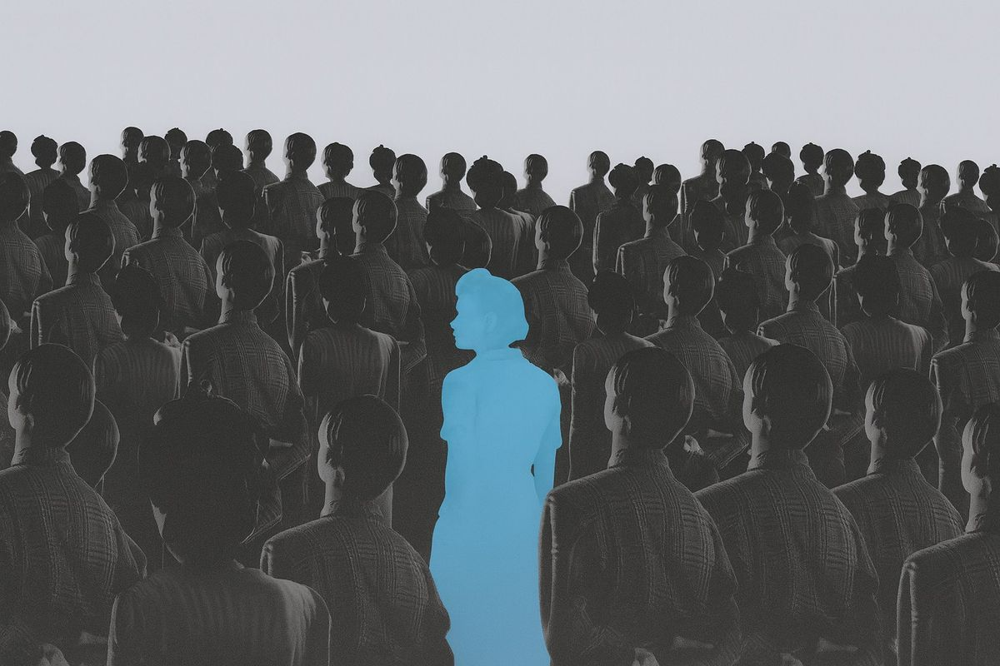
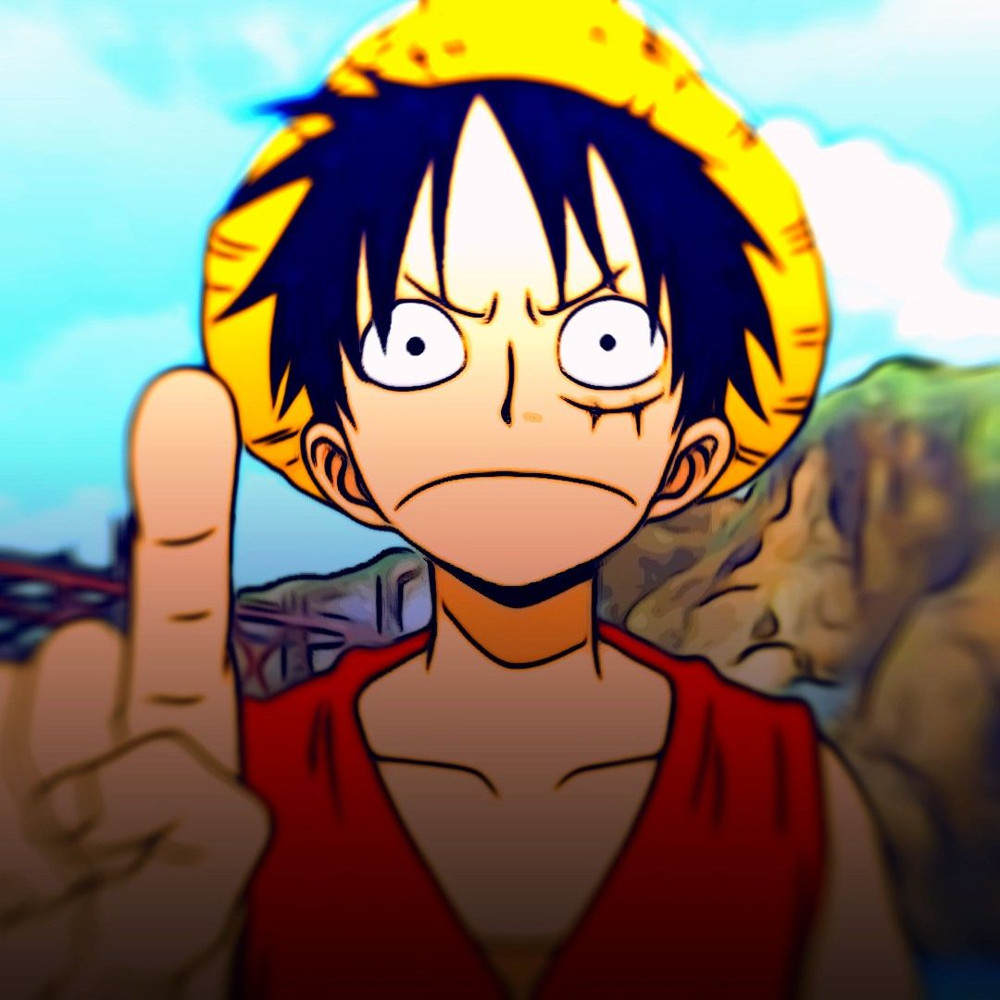
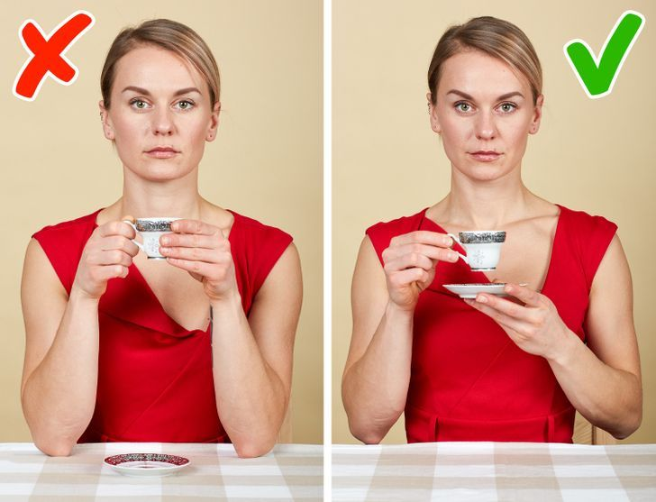

Comunicación No Verbal
Descubre el 65% del mensaje que transmitimos en silencio a través de 9 dimensiones clave.
🕺 Kinésica (Kinesis)
Estudia los movimientos corporales, la postura, las miradas y la gestualidad como canal de expresión.
💡 Dato Clave
La inclinación del torso hacia adelante indica interés; la postura cruzada suele transmitir barrera o protección.
⚡ Microexpresiones
Movimientos faciales ultrarrápidos (fracciones de segundo) e involuntarios que exponen emociones auténticas.
🔍 Investigador Clave
Paul Ekman categorizó las 7 emociones universales detectables en el rostro.

Emoción Involuntaria📐 Proxemia
Análisis del empleo del espacio personal e interpersonal durante la interacción.

Espacio Personal🎙️ Paralenguaje
Atributos vocales no verbales que acompañan al discurso oral.
- Tono: Agudo o grave.
- Ritmo: Pausado o acelerado.
- Volumen: Modulación e intensidad.
- Pausas: Silencios expresivos.
👌 Emblemas
Gestos intencionales con equivalencia verbal directa y acordada culturalmente.
📌 Ejemplo
Levantar el pulgar representa "Aprobación/OK" sin necesidad de hablar.

Traducción Directa👋 Ademanes
Movimientos de brazos y manos que enfatizan, ilustran o matizan las palabras.
💡 Impacto
Aumentan la retención de la audiencia y transmiten dinamismo al comunicar.

Énfasis Corporal📜 Protocolo
Reglas de etiqueta y pautas de comportamiento formal que estructuran la interacción.
💼 Aplicación
Precedencia en eventos, puntualidad y postura institucional.
 Norma Formal
Norma Formal
🤝 El Saludo
Ritual inicial de contacto que establece jerarquía, cercanía y respeto mutuo.
⚙️ Calibración
Un apretón firme y contacto visual de 2 segundos generan confianza inmediata.
Primer Contacto
👔 Vestimenta y Aspecto
Lanza un mensaje visual inmediato sobre profesionalismo, estilo y contexto.
⏱️ Regla de los 7 Segundos
El cerebro juzga credibilidad y estatus antes del primer saludo verbal.
Imagen Visual